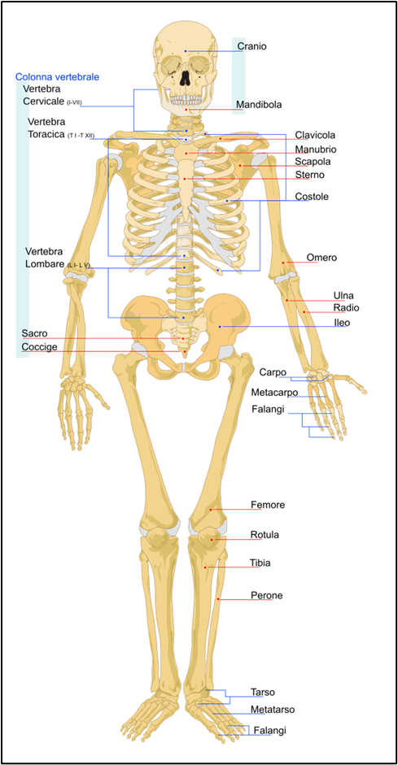

Lo Scheletro
Lo scheletro è una solida impalcatura formata da 206 ossa che svolgono varie funzioni:
- sorreggono il peso del corpo e lo mantengono in posizione eretta;
- consentono il movimento dando appoggio ai muscoli che si collegano alle ossa con i tendini;
- proteggono organi importantissimi e delicati: per esempio, la scatola cranica protegge il cervello, la gabbia toracica il cuore e i polmoni.
Le ossa possono essere di diversa forma e grandezza, infatti, ci sono:
- le ossa corte, come le vertebre, le ossa del polso o della caviglia;
- quelle piatte, come la scapola, il bacino e le ossa della testa;
- quelle lunghe, come quelle degli arti come il femore, la tibia e l'omero.
